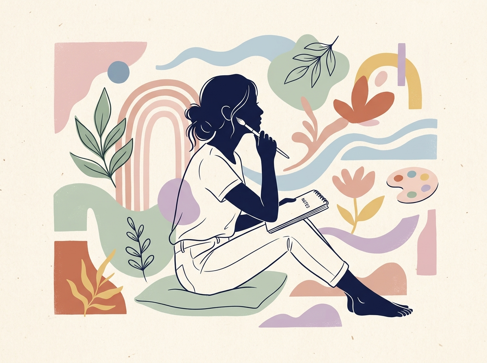

Why InterestArt?
As a software engineering student, my world is often defined by boundaries, structure, and deterministic logic. I love coding—but I found myself craving something physical, messy, and expressive to balance the hours spent behind a bright glowing monitor.
I started experimenting with charcoal drawings and cozy pastel sketching. Over time, that expanded into pottery, sculpture, and exploring classic fine art history. InterestArt is my way of documenting this transition and creating a space where other students, programmers, and creators can discover the peaceful benefits of the slow art movement.
Finding Balance
Began balancing college software courses with oil painting landscapes in the backyard.
Digital & Vector Art
Merged digital design software with traditional textures to establish my signature minimalist silhouette style.
Earthy Textures
Bought a table top pottery wheel and fell in love with the tactile nature of sculpture and raw stoneware.
InterestArt Launch
Created this platform to share sketching tutorials, chiaroscuro insights, and bullet journaling crafts.